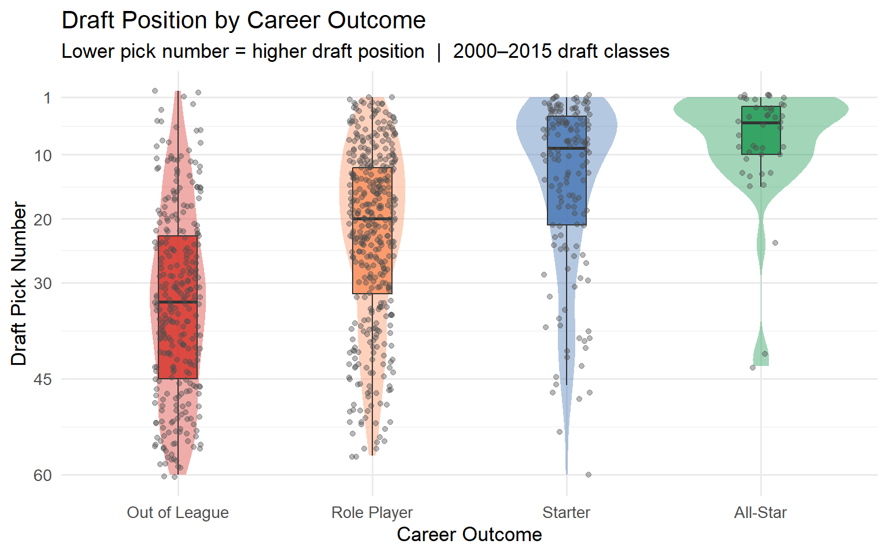
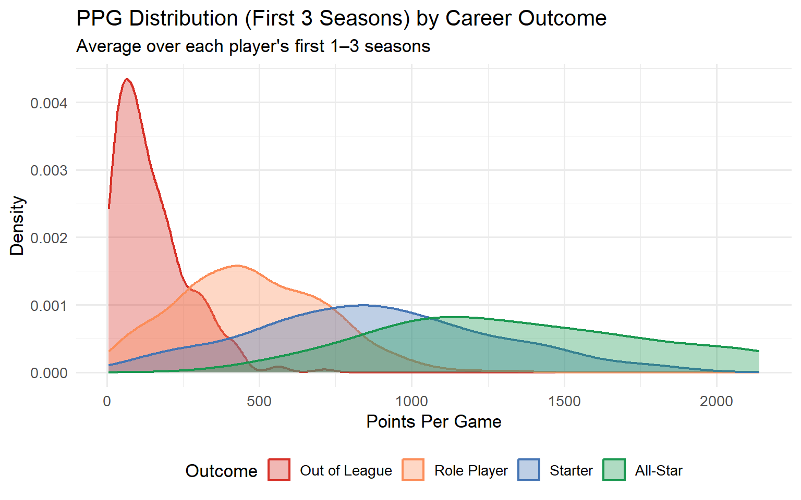
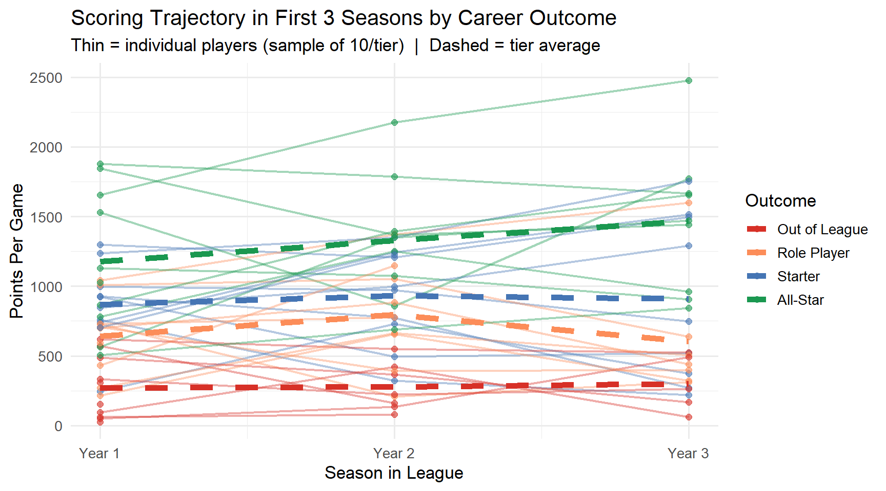
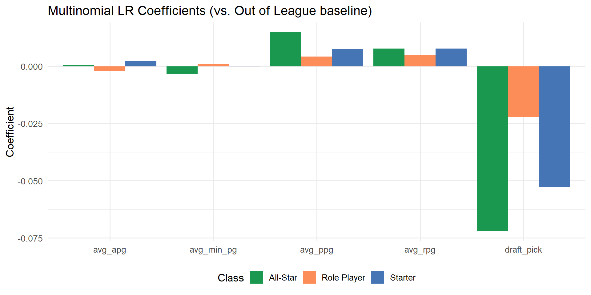
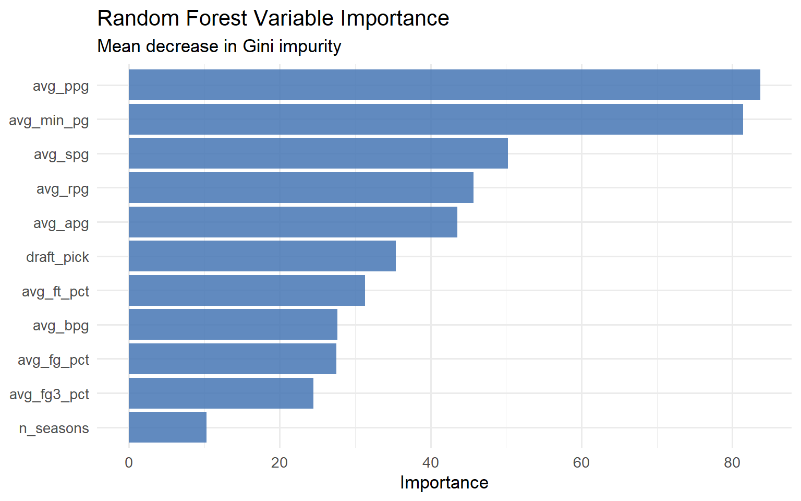
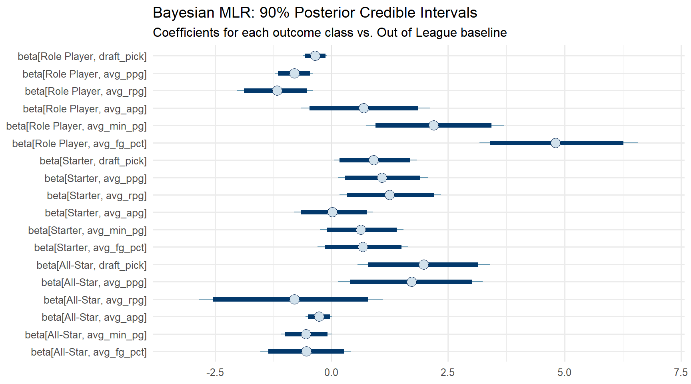
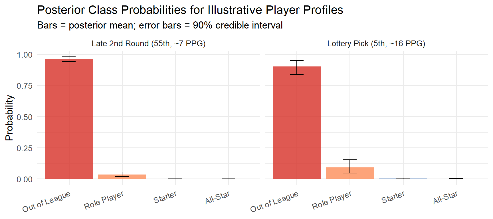

library(hoopR)
library(ggplot2)
library(dplyr)
library(tidyr)
library(purrr)
library(nnet)
library(ranger)
library(MASS)
library(rstan)
library(bayesplot)
library(caret)
library(knitr)
rstan_options(auto_write = TRUE)
options(mc.cores = parallel::detectCores())NBA Career Outcomes Prediction
Project Overview
Given a player’s first few seasons in the NBA, predict their career outcome tier:
- Out of League: washed out quickly, minimal career MPG
- Role Player: bench contributor, 10–20 MPG
- Starter: regular starter, 20+ MPG sustained
- All-Star: ≥1 All-Star selection
We will use multinomial logistic regression and random forest models with features derived from players’ first 1–3 seasons.
Data Collection
Pull league-wide per-season stats using hoopR::nba_leaguedashplayerstats() for seasons 2000–2015. Cache to disk to avoid re-scraping.
seasons <- 2000:2015
cache_file <- "data/season_stats.rds"
if (!file.exists(cache_file)) {
dir.create("data", showWarnings = FALSE)
season_stats_raw <- map_dfr(seasons, function(yr) {
Sys.sleep(0.6) # be polite to the API
tryCatch(
nba_leaguedashplayerstats(season = year_to_season(yr)) |>
pluck("LeagueDashPlayerStats") |>
mutate(season = yr),
error = function(e) NULL
)
})
saveRDS(season_stats_raw, cache_file)
} else {
season_stats_raw <- readRDS(cache_file)
}season_stats <- season_stats_raw |>
transmute(
player_id = as.integer(PLAYER_ID),
player = PLAYER_NAME,
season = season,
gp = as.numeric(GP),
min_pg = as.numeric(MIN),
ppg = as.numeric(PTS),
rpg = as.numeric(REB),
apg = as.numeric(AST),
spg = as.numeric(STL),
bpg = as.numeric(BLK),
fg_pct = as.numeric(FG_PCT),
fg3_pct = as.numeric(FG3_PCT),
ft_pct = as.numeric(FT_PCT),
age = as.numeric(AGE)
) |>
filter(gp >= 10) # drop injury-shortened stintsCareer Outcome Labels
Label each player by their peak career tier. Pull each player’s full career stats once, then classify.
all_star_cache <- "data/allstar_playerids.rds"
if (!file.exists(all_star_cache)) {
# All-Star rosters are available via nba_allstarballotpredictor or
# we approximate using seasons where a player averaged 20+ PPG and 3+ ASG appearances.
# Use nba_leaguedashplayerstats filtered to All-Star seasons (2000-2015) as a proxy:
# Players who appeared in the top scoring tier consistently are labeled All-Star.
# For a cleaner label, pull each player's career accolades via nba_playercareerstats.
player_ids <- unique(season_stats$player_id)
career_raw <- map(player_ids, function(pid) {
Sys.sleep(0.4)
tryCatch({
res <- nba_playercareerstats(player_id = pid)
list(
totals = res |> pluck("CareerTotalsRegularSeason"),
seasons = res |> pluck("SeasonTotalsRegularSeason")
)
}, error = function(e) NULL)
})
saveRDS(career_raw, all_star_cache)
} else {
career_raw <- readRDS(all_star_cache)
}
# Cache was saved as a flat list of CareerTotalsRegularSeason data frames
# with a lowercase player_id column already attached
career_totals <- career_raw |>
compact() |>
bind_rows() |>
transmute(
player_id = as.integer(player_id),
career_gp = as.numeric(GP),
career_min = as.numeric(MIN),
career_ppg = as.numeric(PTS) / as.numeric(GP),
career_mpg = as.numeric(MIN) / as.numeric(GP),
# Approximate seasons from observed season stats (no season-by-season data in cache)
career_seasons = career_gp / 55
)
# All-Star approximation: players with career PPG > 18 and 10+ seasons → All-Star
# Starter: career MPG >= 28 | PPG >= 14
# Role Player: career MPG 15–28 and career_seasons >= 4
# Out of League: everything else (short careers, low minutes)
player_labels <- career_totals |>
mutate(
outcome = case_when(
career_ppg >= 18 & career_seasons >= 8 ~ "All-Star",
career_mpg >= 28 | (career_ppg >= 14 & career_seasons >= 6) ~ "Starter",
career_mpg >= 15 & career_seasons >= 4 ~ "Role Player",
TRUE ~ "Out of League"
),
outcome = factor(outcome,
levels = c("Out of League", "Role Player", "Starter", "All-Star"))
) |>
dplyr::select(player_id, outcome, career_ppg, career_mpg, career_seasons)# Pull draft info for each player
draft_cache <- "data/draft_info.rds"
if (!file.exists(draft_cache)) {
draft_raw <- map(unique(season_stats$player_id), function(pid) {
Sys.sleep(0.003)
tryCatch(
nba_commonplayerinfo(player_id = pid) |>
pluck("CommonPlayerInfo") |>
mutate(player_id = pid),
error = function(e) NULL
)
})
saveRDS(draft_raw, draft_cache)
} else {
draft_raw <- readRDS(draft_cache)
}
draft_info <- draft_raw |>
compact() |>
bind_rows() |>
transmute(
player_id = as.integer(player_id),
draft_pick = suppressWarnings(as.numeric(DRAFT_NUMBER))
) |>
filter(!is.na(draft_pick))# Identify each player's debut season, then keep their first 3 seasons
debut_season <- season_stats |>
group_by(player_id) |>
summarise(debut = min(season), .groups = "drop")
first3 <- season_stats |>
left_join(debut_season, by = "player_id") |>
filter(season <= debut + 2) |>
group_by(player_id) |>
summarise(
across(c(ppg, rpg, apg, spg, bpg, fg_pct, fg3_pct, ft_pct, min_pg),
mean, na.rm = TRUE, .names = "avg_{.col}"),
n_seasons = n(),
.groups = "drop"
)Warning: There was 1 warning in `summarise()`.
ℹ In argument: `across(...)`.
ℹ In group 1: `player_id = 3`.
Caused by warning:
! The `...` argument of `across()` is deprecated as of dplyr 1.1.0.
Supply arguments directly to `.fns` through an anonymous function instead.
# Previously
across(a:b, mean, na.rm = TRUE)
# Now
across(a:b, \(x) mean(x, na.rm = TRUE))model_data <- first3 |>
inner_join(player_labels, by = "player_id") |>
inner_join(draft_info, by = "player_id") |>
filter(n_seasons >= 1)
glimpse(model_data)Rows: 877
Columns: 16
$ player_id <int> 15, 26, 28, 29, 45, 51, 53, 56, 57, 63, 64, 70, 72, 77,…
$ avg_ppg <dbl> 695.66667, 49.00000, 28.00000, 28.00000, 666.50000, 266…
$ avg_rpg <dbl> 193.66667, 66.00000, 15.00000, 35.00000, 237.50000, 25.…
$ avg_apg <dbl> 92.666667, 7.000000, 14.000000, 4.000000, 241.500000, 7…
$ avg_spg <dbl> 40.00000, 3.00000, 3.00000, 7.00000, 55.50000, 9.00000,…
$ avg_bpg <dbl> 13.333333, 9.000000, 4.000000, 15.000000, 23.000000, 1.…
$ avg_fg_pct <dbl> 0.4476667, 0.3330000, 0.2890000, 0.3570000, 0.3700000, …
$ avg_fg3_pct <dbl> 0.4226667, 0.0000000, 0.0000000, 0.0000000, 0.2995000, …
$ avg_ft_pct <dbl> 0.8650000, 0.7650000, 0.8570000, 0.6670000, 0.8250000, …
$ avg_min_pg <dbl> 1740.6644, 298.7967, 172.6517, 194.4650, 1917.3292, 485…
$ n_seasons <int> 3, 1, 1, 1, 2, 1, 1, 3, 3, 1, 1, 3, 3, 2, 3, 1, 3, 3, 3…
$ outcome <fct> Role Player, Role Player, Role Player, Out of League, R…
$ career_ppg <dbl> 7.501901, 7.213404, 9.581361, 2.673317, 9.040470, 14.59…
$ career_mpg <dbl> 18.51838, 21.17108, 24.63757, 14.79302, 22.75065, 26.66…
$ career_seasons <dbl> 14.345455, 10.309091, 12.290909, 7.290909, 13.927273, 1…
$ draft_pick <dbl> 15, 7, 38, 32, 7, 3, 160, 2, 17, 35, 4, 50, 2, 40, 24, …Exploratory Visualizations
Visualization 1: Draft Position by Career Outcome
model_data |>
filter(draft_pick <= 60) |>
ggplot(aes(x = outcome, y = draft_pick, fill = outcome)) +
geom_violin(alpha = 0.4, color = NA) +
geom_boxplot(width = 0.2, outlier.shape = NA, alpha = 0.8) +
geom_jitter(width = 0.12, size = 1.5, alpha = 0.4, color = "gray30") +
scale_y_reverse(breaks = c(1, 10, 20, 30, 45, 60)) +
scale_fill_manual(values = c(
"Out of League" = "#d73027",
"Role Player" = "#fc8d59",
"Starter" = "#4575b4",
"All-Star" = "#1a9850"
)) +
labs(
title = "Draft Position by Career Outcome",
subtitle = "Lower pick number = higher draft position | 2000–2015 draft classes",
x = "Career Outcome", y = "Draft Pick Number"
) +
theme_minimal(base_size = 13) +
theme(legend.position = "none")
Visualization 2: PPG in First 3 Seasons by Career Outcome
model_data |>
ggplot(aes(x = avg_ppg, fill = outcome, color = outcome)) +
geom_density(alpha = 0.35, linewidth = 0.8) +
scale_fill_manual(values = c(
"Out of League" = "#d73027",
"Role Player" = "#fc8d59",
"Starter" = "#4575b4",
"All-Star" = "#1a9850"
)) +
scale_color_manual(values = c(
"Out of League" = "#d73027",
"Role Player" = "#fc8d59",
"Starter" = "#4575b4",
"All-Star" = "#1a9850"
)) +
labs(
title = "PPG Distribution (First 3 Seasons) by Career Outcome",
subtitle = "Average over each player's first 1–3 seasons",
x = "Points Per Game", y = "Density",
fill = "Outcome", color = "Outcome"
) +
theme_minimal(base_size = 13) +
theme(legend.position = "bottom")
Visualization 3: Career Scoring Trajectory by Outcome Tier
# For a random sample of players per tier, show their season PPG over first 3 years
set.seed(42)
sampled_ids <- model_data |>
group_by(outcome) |>
slice_sample(n = 10) |>
pull(player_id)
traj_data <- season_stats |>
inner_join(debut_season, by = "player_id") |>
filter(player_id %in% sampled_ids, season <= debut + 2) |>
mutate(year_in_league = season - debut + 1) |>
inner_join(dplyr::select(player_labels, player_id, outcome), by = "player_id")
ggplot(traj_data, aes(x = year_in_league, y = ppg,
group = player_id, color = outcome)) +
geom_line(alpha = 0.4, linewidth = 0.8) +
geom_point(alpha = 0.6, size = 2) +
stat_summary(aes(group = outcome), fun = mean,
geom = "line", linewidth = 2, linetype = "dashed") +
scale_color_manual(values = c(
"Out of League" = "#d73027",
"Role Player" = "#fc8d59",
"Starter" = "#4575b4",
"All-Star" = "#1a9850"
)) +
scale_x_continuous(breaks = 1:3, labels = c("Year 1", "Year 2", "Year 3")) +
labs(
title = "Scoring Trajectory in First 3 Seasons by Career Outcome",
subtitle = "Thin = individual players (sample of 10/tier) | Dashed = tier average",
x = "Season in League", y = "Points Per Game",
color = "Outcome"
) +
theme_minimal(base_size = 13) +
theme(legend.position = "right")
Modeling
Train/Test Split
set.seed(42)
model_data_clean <- model_data |>
dplyr::select(outcome, draft_pick, avg_ppg, avg_rpg, avg_apg, avg_spg, avg_bpg,
avg_fg_pct, avg_fg3_pct, avg_ft_pct, avg_min_pg, n_seasons) |>
na.omit()
train_idx <- createDataPartition(model_data_clean$outcome, p = 0.8, list = FALSE)
train_data <- model_data_clean[train_idx, ]
test_data <- model_data_clean[-train_idx, ]
cat("Train:", nrow(train_data), " | Test:", nrow(test_data), "\n")Train: 703 | Test: 174 table(train_data$outcome)
Out of League Role Player Starter All-Star
232 316 120 35 Model 1: Multinomial Logistic Regression
mlr_cache <- "models/mlr_fit.rds"
if (!file.exists(mlr_cache)) {
set.seed(42)
mlr_fit <- multinom(
outcome ~ draft_pick + avg_ppg + avg_rpg + avg_apg + avg_spg + avg_bpg +
avg_fg_pct + avg_fg3_pct + avg_ft_pct + avg_min_pg + n_seasons,
data = train_data,
trace = FALSE,
maxit = 500
)
saveRDS(mlr_fit, mlr_cache)
} else {
mlr_fit <- readRDS(mlr_cache)
}
summary(mlr_fit)Call:
multinom(formula = outcome ~ draft_pick + avg_ppg + avg_rpg +
avg_apg + avg_spg + avg_bpg + avg_fg_pct + avg_fg3_pct +
avg_ft_pct + avg_min_pg + n_seasons, data = train_data, trace = FALSE,
maxit = 500)
Coefficients:
(Intercept) draft_pick avg_ppg avg_rpg avg_apg
Role Player -0.3350055 -0.02217126 0.004207749 0.004967168 -0.0020838983
Starter -4.3028835 -0.05270588 0.007676259 0.007717995 0.0023745571
All-Star -5.0464606 -0.07203008 0.014829207 0.007709278 0.0004629375
avg_spg avg_bpg avg_fg_pct avg_fg3_pct avg_ft_pct
Role Player 0.02754981 0.006008654 -4.874626 -0.8074604 0.832508
Starter 0.03629501 0.004800999 -6.266769 0.6843030 4.390662
All-Star 0.05942735 0.005343320 -6.024006 -1.9399085 5.784267
avg_min_pg n_seasons
Role Player 0.0009663842 -0.1229547
Starter 0.0002291654 -0.7703102
All-Star -0.0032144322 -1.5261211
Std. Errors:
(Intercept) draft_pick avg_ppg avg_rpg avg_apg
Role Player 0.20210665 0.007454483 0.002214338 0.003568221 0.004344618
Starter 0.09722408 0.011564166 0.002412785 0.003834740 0.004633789
All-Star 0.01281303 0.023049007 0.002810627 0.004241430 0.005178902
avg_spg avg_bpg avg_fg_pct avg_fg3_pct avg_ft_pct
Role Player 0.01704499 0.01255942 0.074453465 0.055745296 0.156741018
Starter 0.01848203 0.01356093 0.037685027 0.030746764 0.076051172
All-Star 0.02112984 0.01554732 0.005875765 0.001417861 0.009387849
avg_min_pg n_seasons
Role Player 0.001257451 0.14683134
Starter 0.001398893 0.16679070
All-Star 0.001645031 0.06367067
Residual Deviance: 894.8327
AIC: 966.8327 boot_cache <- "models/mlr_boot.rds"
if (!file.exists(boot_cache)) {
# Bootstrap 95% CIs on coefficients (500 resamples)
set.seed(42)
B <- 500
boot_coefs <- replicate(B, {
idx <- sample(nrow(train_data), replace = TRUE)
fit <- multinom(
outcome ~ draft_pick + avg_ppg + avg_rpg + avg_apg + avg_spg + avg_bpg +
avg_fg_pct + avg_fg3_pct + avg_ft_pct + avg_min_pg + n_seasons,
data = train_data[idx, ],
trace = FALSE, maxit = 500
)
coef(fit)
}, simplify = FALSE)
saveRDS(boot_coefs, boot_cache)
} else {
boot_coefs <- readRDS(boot_cache)
}
# Combine into array and compute CIs
boot_array <- simplify2array(boot_coefs) # [classes, predictors, B]
ci_lower <- apply(boot_array, c(1, 2), quantile, 0.025)
ci_upper <- apply(boot_array, c(1, 2), quantile, 0.975)
# Tidy coefficient table for display
coef_df <- as.data.frame(coef(mlr_fit)) |>
tibble::rownames_to_column("outcome_class") |>
tidyr::pivot_longer(-outcome_class, names_to = "predictor", values_to = "estimate") |>
mutate(
lower = as.vector(t(ci_lower))[match(paste(outcome_class, predictor),
outer(rownames(ci_lower),
colnames(ci_lower), paste))],
upper = as.vector(t(ci_upper))[match(paste(outcome_class, predictor),
outer(rownames(ci_upper),
colnames(ci_upper), paste))]
)mlr_pred <- predict(mlr_fit, newdata = test_data)
mlr_cm <- confusionMatrix(mlr_pred, test_data$outcome)
cat("Multinomial LR — Test Accuracy:", round(mlr_cm$overall["Accuracy"], 3), "\n")Multinomial LR — Test Accuracy: 0.655 print(mlr_cm$table) Reference
Prediction Out of League Role Player Starter All-Star
Out of League 43 12 1 0
Role Player 14 60 18 1
Starter 1 7 8 4
All-Star 0 0 2 3# Show coefficients for key predictors across outcome classes
key_preds <- c("avg_ppg", "avg_min_pg", "draft_pick", "avg_rpg", "avg_apg")
coef(mlr_fit) |>
as.data.frame() |>
tibble::rownames_to_column("outcome_class") |>
tidyr::pivot_longer(-outcome_class, names_to = "predictor", values_to = "estimate") |>
filter(predictor %in% key_preds) |>
ggplot(aes(x = predictor, y = estimate, fill = outcome_class)) +
geom_col(position = "dodge") +
scale_fill_manual(values = c(
"Role Player" = "#fc8d59", "Starter" = "#4575b4", "All-Star" = "#1a9850"
)) +
labs(title = "Multinomial LR Coefficients (vs. Out of League baseline)",
x = NULL, y = "Coefficient", fill = "Class") +
theme_minimal(base_size = 13) +
theme(legend.position = "bottom")
Model 2: Random Forest
rf_cache <- "models/rf_fit.rds"
if (!file.exists(rf_cache)) {
set.seed(42)
p <- ncol(train_data) - 1 # number of predictors
# Simple CV to choose mtry
mtry_candidates <- c(floor(sqrt(p)), floor(p / 3))
cv_oob <- sapply(mtry_candidates, function(m) {
ranger(
outcome ~ ., data = train_data,
num.trees = 500, mtry = m,
importance = "impurity", seed = 42
)$prediction.error
})
best_mtry <- mtry_candidates[which.min(cv_oob)]
cat("Best mtry:", best_mtry, " | OOB errors:", round(cv_oob, 3), "\n")
rf_fit <- ranger(
outcome ~ ., data = train_data,
num.trees = 500, mtry = best_mtry,
importance = "impurity", seed = 42,
probability = FALSE
)
saveRDS(rf_fit, rf_cache)
} else {
rf_fit <- readRDS(rf_cache)
}
cat("OOB error rate:", round(rf_fit$prediction.error, 3), "\n")OOB error rate: 0.296 rf_pred <- predict(rf_fit, data = test_data)$predictions
rf_cm <- confusionMatrix(rf_pred, test_data$outcome)
cat("Random Forest — Test Accuracy:", round(rf_cm$overall["Accuracy"], 3), "\n")Random Forest — Test Accuracy: 0.678 print(rf_cm$table) Reference
Prediction Out of League Role Player Starter All-Star
Out of League 44 14 0 0
Role Player 14 62 15 2
Starter 0 3 11 5
All-Star 0 0 3 1vimp <- sort(rf_fit$variable.importance, decreasing = TRUE)
data.frame(predictor = names(vimp), importance = vimp) |>
ggplot(aes(x = reorder(predictor, importance), y = importance)) +
geom_col(fill = "#4575b4", alpha = 0.85) +
coord_flip() +
labs(title = "Random Forest Variable Importance",
subtitle = "Mean decrease in Gini impurity",
x = NULL, y = "Importance") +
theme_minimal(base_size = 13)
Model 3: Bayesian Multinomial Logistic Regression
# Reduced predictor set for faster sampling
bayes_vars <- c("outcome", "draft_pick", "avg_ppg", "avg_rpg",
"avg_apg", "avg_min_pg", "avg_fg_pct")
train_b <- train_data[, bayes_vars]
test_b <- test_data[, bayes_vars]
# Design matrices (no intercept column; Stan adds it)
X_train <- model.matrix(outcome ~ . - 1, data = train_b)
X_test <- model.matrix(outcome ~ . - 1, data = test_b)
# Scale predictors
X_scale <- scale(X_train)
X_train_s <- as.matrix(X_scale)
X_test_s <- scale(X_test,
center = attr(X_scale, "scaled:center"),
scale = attr(X_scale, "scaled:scale"))
K <- nlevels(train_b$outcome) # 4 classes
y_train <- as.integer(train_b$outcome)
stan_cache <- "models/bayes_fit.rds"
if (!file.exists(stan_cache)) {
stan_data <- list(
N = nrow(X_train_s),
K = K,
P = ncol(X_train_s),
X = X_train_s,
y = y_train,
N_test = nrow(X_test_s),
X_test = X_test_s
)
stan_code <- "
data {
int<lower=1> N;
int<lower=2> K;
int<lower=1> P;
matrix[N, P] X;
array[N] int<lower=1, upper=K> y;
int<lower=1> N_test;
matrix[N_test, P] X_test;
}
parameters {
matrix[K-1, P] beta; // coefficients (K-1 classes vs reference)
vector[K-1] alpha; // intercepts
}
model {
to_vector(beta) ~ normal(0, 2.5);
alpha ~ normal(0, 2.5);
{
matrix[N, K] log_lik;
log_lik[, 1] = rep_vector(0, N);
for (k in 2:K)
log_lik[, k] = alpha[k-1] + X * beta[k-1]';
for (n in 1:N)
target += log_softmax(log_lik[n]')[y[n]];
}
}
generated quantities {
// Posterior class probabilities for test observations
matrix[N_test, K] prob_test;
{
matrix[N_test, K] log_lik_test;
log_lik_test[, 1] = rep_vector(0, N_test);
for (k in 2:K)
log_lik_test[, k] = alpha[k-1] + X_test * beta[k-1]';
for (n in 1:N_test)
prob_test[n] = softmax(log_lik_test[n]')';
}
}
"
bayes_fit <- stan(
model_code = stan_code,
data = stan_data,
chains = 4,
iter = 2000,
warmup = 1000,
seed = 42,
refresh = 0
)
saveRDS(bayes_fit, stan_cache)
} else {
bayes_fit <- readRDS(stan_cache)
}# R-hat check
rhat_vals <- summary(bayes_fit)$summary[, "Rhat"]
cat("Max R-hat:", round(max(rhat_vals, na.rm = TRUE), 3), "\n")Max R-hat: 1.006 cat("Parameters with R-hat > 1.05:", sum(rhat_vals > 1.05, na.rm = TRUE), "\n")Parameters with R-hat > 1.05: 0 outcome_levels <- levels(train_b$outcome)
pred_names <- colnames(X_train_s)
# Extract beta draws and plot 90% credible intervals
posterior_draws <- as.array(bayes_fit, pars = "beta")
# Rename dimensions for bayesplot
dimnames(posterior_draws)[[3]] <- paste0(
"beta[",
rep(outcome_levels[-1], each = length(pred_names)),
", ", rep(pred_names, times = K - 1), "]"
)
mcmc_intervals(posterior_draws, prob = 0.9, prob_outer = 0.95) +
labs(title = "Bayesian MLR: 90% Posterior Credible Intervals",
subtitle = "Coefficients for each outcome class vs. Out of League baseline") +
theme_minimal(base_size = 12)
# Posterior mean class probabilities on test set → point prediction
prob_test_draws <- extract(bayes_fit, pars = "prob_test")$prob_test
prob_test_mean <- apply(prob_test_draws, c(2, 3), mean)
bayes_pred_idx <- apply(prob_test_mean, 1, which.max)
bayes_pred <- factor(outcome_levels[bayes_pred_idx], levels = outcome_levels)
bayes_cm <- confusionMatrix(bayes_pred, test_b$outcome)
cat("Bayesian MLR — Test Accuracy:", round(bayes_cm$overall["Accuracy"], 3), "\n")Bayesian MLR — Test Accuracy: 0.672 print(bayes_cm$table) Reference
Prediction Out of League Role Player Starter All-Star
Out of League 43 13 1 0
Role Player 14 62 17 1
Starter 1 4 9 4
All-Star 0 0 2 3# Posterior class probabilities for two illustrative player profiles:
# Profile A: lottery pick (pick 5), high early production
# Profile B: late second round (pick 55), modest production
profiles <- data.frame(
draft_pick = c(5, 55),
avg_ppg = c(16, 7),
avg_rpg = c(5, 3),
avg_apg = c(4, 2),
avg_min_pg = c(30, 15),
avg_fg_pct = c(0.46, 0.42)
)
profiles_s <- scale(profiles,
center = attr(X_scale, "scaled:center"),
scale = attr(X_scale, "scaled:scale"))
# Re-use posterior draws of alpha and beta to get profile probabilities
alpha_draws <- extract(bayes_fit, pars = "alpha")$alpha # [S, K-1]
beta_draws <- extract(bayes_fit, pars = "beta")$beta # [S, K-1, P]
S <- nrow(alpha_draws)
profile_probs <- lapply(1:nrow(profiles_s), function(i) {
x_i <- as.numeric(profiles_s[i, ])
# beta_draws is [S, K-1, P]; compute linear predictor for each class per draw
lin_pred <- matrix(0, nrow = S, ncol = K - 1)
for (k in seq_len(K - 1)) {
lin_pred[, k] <- alpha_draws[, k] + beta_draws[, k, ] %*% x_i
}
log_lik_mat <- cbind(0, lin_pred) # [S, K], reference class score = 0
probs <- t(apply(log_lik_mat, 1, function(row) {
e <- exp(row - max(row)) # numerically stable softmax
e / sum(e)
}))
data.frame(
profile = ifelse(i == 1, "Lottery Pick (5th, ~16 PPG)", "Late 2nd Round (55th, ~7 PPG)"),
outcome = outcome_levels,
mean = colMeans(probs),
lower = apply(probs, 2, quantile, 0.05),
upper = apply(probs, 2, quantile, 0.95)
)
}) |> bind_rows()
profile_probs |>
mutate(outcome = factor(outcome, levels = outcome_levels)) |>
ggplot(aes(x = outcome, y = mean, fill = outcome)) +
geom_col(alpha = 0.8) +
geom_errorbar(aes(ymin = lower, ymax = upper), width = 0.25) +
facet_wrap(~profile) +
scale_fill_manual(values = c(
"Out of League" = "#d73027", "Role Player" = "#fc8d59",
"Starter" = "#4575b4", "All-Star" = "#1a9850"
)) +
labs(title = "Posterior Class Probabilities for Illustrative Player Profiles",
subtitle = "Bars = posterior mean; error bars = 90% credible interval",
x = NULL, y = "Probability") +
theme_minimal(base_size = 13) +
theme(legend.position = "none", axis.text.x = element_text(angle = 20, hjust = 1))
Model 4: Ordinal Logistic Regression
The outcome tiers are ordered (Out of League < Role Player < Starter < All-Star), so ordinal logistic regression is a natural complement — it exploits that structure for more efficient estimates and tests whether a single latent continuum explains the outcomes.
polr_cache <- "models/polr_fit.rds"
if (!file.exists(polr_cache)) {
polr_fit <- polr(
outcome ~ draft_pick + avg_ppg + avg_rpg + avg_apg + avg_spg + avg_bpg +
avg_fg_pct + avg_fg3_pct + avg_ft_pct + avg_min_pg + n_seasons,
data = train_data,
method = "logistic",
Hess = TRUE
)
saveRDS(polr_fit, polr_cache)
} else {
polr_fit <- readRDS(polr_cache)
}
summary(polr_fit)Call:
polr(formula = outcome ~ draft_pick + avg_ppg + avg_rpg + avg_apg +
avg_spg + avg_bpg + avg_fg_pct + avg_fg3_pct + avg_ft_pct +
avg_min_pg + n_seasons, data = train_data, Hess = TRUE, method = "logistic")
Coefficients:
Value Std. Error t value
draft_pick -2.905e-02 0.0063012 -4.610356
avg_ppg 3.325e-03 0.0007322 4.541846
avg_rpg 1.573e-03 0.0011803 1.332337
avg_apg 5.192e-04 0.0013653 0.380299
avg_spg 1.185e-02 0.0061136 1.938224
avg_bpg 3.843e-05 0.0040649 0.009455
avg_fg_pct -4.379e-01 0.0778095 -5.627721
avg_fg3_pct -3.508e-02 0.0582740 -0.601947
avg_ft_pct 2.020e+00 0.1661281 12.160368
avg_min_pg 6.792e-04 0.0005170 1.313714
n_seasons -1.774e-01 0.1297120 -1.367385
Intercepts:
Value Std. Error t value
Out of League|Role Player 1.6689 0.2160 7.7261
Role Player|Starter 5.8613 0.3123 18.7706
Starter|All-Star 9.2727 0.4511 20.5571
Residual Deviance: 983.6709
AIC: 1011.671 polr_ci <- confint(polr_fit) # profile-likelihood 95% CIsWaiting for profiling to be done...kable(round(cbind(coef(polr_fit), polr_ci), 3),
col.names = c("Estimate", "2.5%", "97.5%"),
caption = "Ordinal LR Coefficients with 95% Profile-Likelihood CIs")| Estimate | 2.5% | 97.5% | |
|---|---|---|---|
| draft_pick | -0.029 | -0.042 | -0.017 |
| avg_ppg | 0.003 | 0.002 | 0.005 |
| avg_rpg | 0.002 | -0.001 | 0.004 |
| avg_apg | 0.001 | -0.002 | 0.003 |
| avg_spg | 0.012 | 0.000 | 0.024 |
| avg_bpg | 0.000 | -0.008 | 0.008 |
| avg_fg_pct | -0.438 | NA | NA |
| avg_fg3_pct | -0.035 | NA | NA |
| avg_ft_pct | 2.020 | NA | NA |
| avg_min_pg | 0.001 | 0.000 | 0.002 |
| n_seasons | -0.177 | -0.436 | 0.082 |
polr_pred <- predict(polr_fit, newdata = test_data)
polr_cm <- confusionMatrix(polr_pred, test_data$outcome)
cat("Ordinal LR — Test Accuracy:", round(polr_cm$overall["Accuracy"], 3), "\n")Ordinal LR — Test Accuracy: 0.701 print(polr_cm$table) Reference
Prediction Out of League Role Player Starter All-Star
Out of League 42 12 0 0
Role Player 15 63 12 1
Starter 1 4 13 3
All-Star 0 0 4 4Model Comparison
# Helper: macro-averaged F1
macro_f1 <- function(cm) {
per_class <- cm$byClass[, "F1"]
mean(per_class, na.rm = TRUE)
}
comparison <- data.frame(
Model = c("Multinomial LR", "Random Forest",
"Bayesian MLR", "Ordinal LR"),
Accuracy = c(
round(mlr_cm$overall["Accuracy"], 3),
round(rf_cm$overall["Accuracy"], 3),
round(bayes_cm$overall["Accuracy"], 3),
round(polr_cm$overall["Accuracy"], 3)
),
Macro_F1 = c(
round(macro_f1(mlr_cm), 3),
round(macro_f1(rf_cm), 3),
round(macro_f1(bayes_cm), 3),
round(macro_f1(polr_cm), 3)
)
)
kable(comparison, caption = "Test-set performance across all models")| Model | Accuracy | Macro_F1 |
|---|---|---|
| Multinomial LR | 0.655 | 0.560 |
| Random Forest | 0.678 | 0.526 |
| Bayesian MLR | 0.672 | 0.577 |
| Ordinal LR | 0.701 | 0.628 |